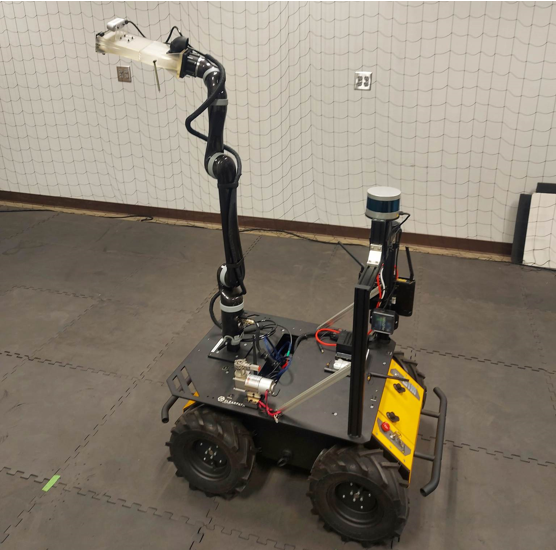

Description
Hoping to publish this research work to IROS 2023 and AIM 2023, the goal is to have a leaf picking robot for agricultural fields. This involves a manipulator on a mobile robot that is able to approach a tree and extract a leaf. Going over the design process and development of an autonomous robot that is able to navigate an agricultural field and extract leaves that are healthy. This research includes visual processing for leaf segmentation, mechanical design of the end effector, manipulator trajectory generation and navigation.